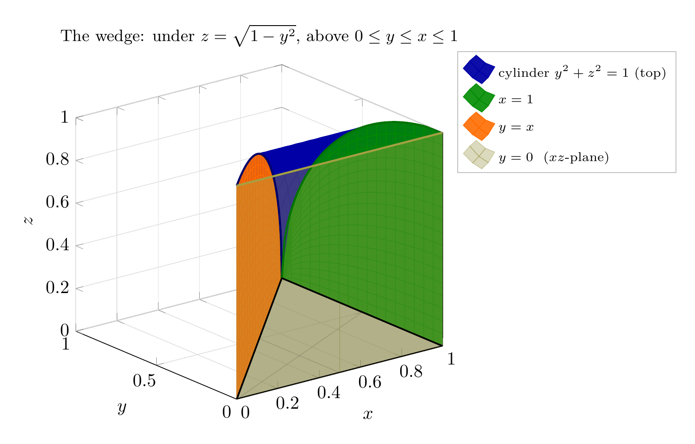
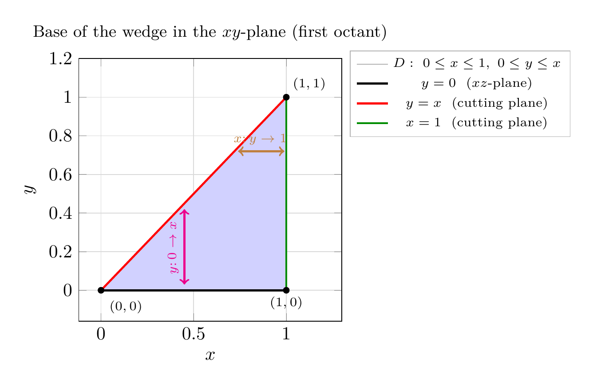
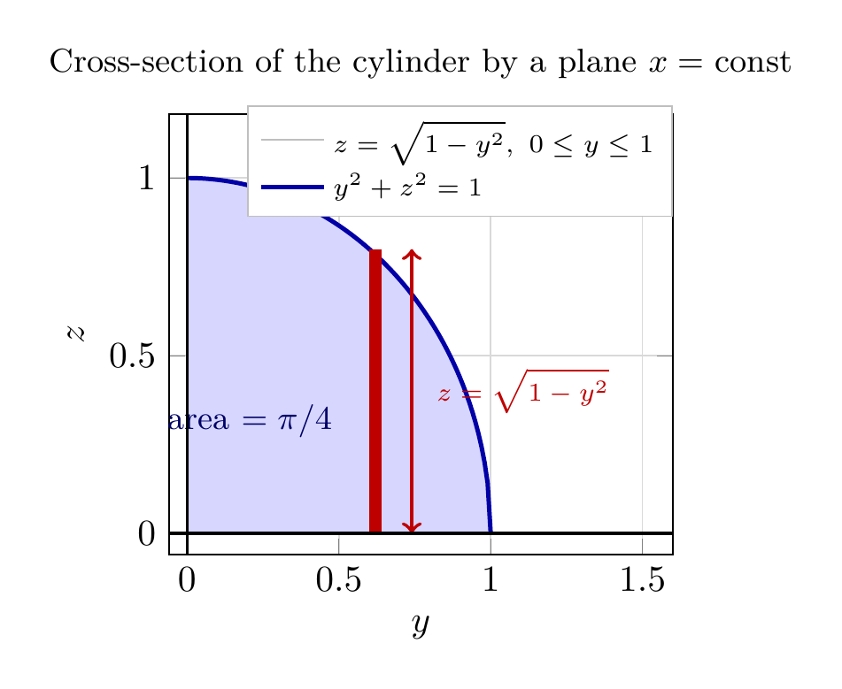

Please solve the problem in the following image.
(Image `20260927_233012_755850_utc_0800_0.png`. Alt text: Image: human_20260927_233012_755850_utc_0800)
20260927_233012_755850_utc_0800_0.png
End of problem
Answer
# Volume of a Wedge Cut from a Cylinder (Rogawski, *Calculus*, §15.7, Ex. 23)
**Problem.** (a) Express the volume of the wedge in the first octant that is cut from the cylinder
$y^{2}+z^{2}=1$ by the planes $y=x$ and $x=1$ as a triple integral. (b) Find its exact value.
---
## Step 1 — Understand the solid
The equation $y^{2}+z^{2}=1$ contains **no** $x$, so it is a **cylinder of radius 1 whose axis is the $x$-axis**;
its cross-section in every plane $x=\text{const}$ is the circle $y^{2}+z^{2}=1$.
Inside the **first octant** ($x\ge 0,\ y\ge 0,\ z\ge 0$) the cylinder contributes the roof
$$
z=\sqrt{1-y^{2}}\qquad (0\le y\le 1),
$$
and the two cutting planes contribute the vertical walls $y=x$ and $x=1$. So the wedge is
*bounded above by the cylinder, below by $z=0$, and on the sides by $y=0$, $y=x$, $x=1$.*
---
\documentclass[border=10pt]{standalone}
\usepackage{pgfplots}
\pgfplotsset{compat=1.18}
\begin{document}
\begin{tikzpicture}
\begin{axis}[
width=8.6cm, height=8.0cm,
view={-38}{22},
xlabel=$x$, ylabel=$y$, zlabel=$z$,
xmin=0, xmax=1, ymin=0, ymax=1, zmin=0, zmax=1,
z buffer=sort,
grid=major, grid style={black!12},
title={The wedge: under $z=\sqrt{1-y^{2}}$, above $0\le y\le x\le 1$},
title style={font=\small},
legend style={at={(1.04,1.04)}, anchor=north west, font=\scriptsize,
fill=white, draw=black!25, cells={anchor=west}},
every axis plot post/.append style={shader=flat}]
% ---- back face y = 0 (rectangle 0<=x<=1, 0<=z<=1) ----
\addplot3[surf, opacity=0.35, yellow!55!black, draw=none, forget plot,
domain=0:1, y domain=0:1, samples=3, samples y=3]
({x},{0},{y});
% ---- bottom triangle z = 0 : 0<=y<=x<=1 ----
\addplot3[surf, opacity=0.30, gray, draw=none, forget plot,
domain=0:1, y domain=0:1, samples=3, samples y=3]
({x},{x*y},{0});
% ---- curved top: cylinder y^2+z^2=1 over the triangle ----
\addplot3[surf, opacity=0.95, blue!65!black, draw=none,
domain=0:1, y domain=0:1, samples=18, samples y=18]
({x},{x*y},{sqrt(1-x^2*y^2)});
\addlegendentry{cylinder $y^{2}+z^{2}=1$ (top)}
% ---- cutting plane x = 1 (quarter disk in the y z-plane) ----
\addplot3[surf, opacity=0.90, green!55!black, draw=none,
domain=0:1, y domain=0:1, samples=18, samples y=18]
({1},{x},{y*sqrt(1-x^2)});
\addlegendentry{$x=1$}
% ---- cutting plane y = x ----
\addplot3[surf, opacity=0.90, orange!85!red, draw=none,
domain=0:1, y domain=0:1, samples=18, samples y=18]
({x},{x},{y*sqrt(1-x^2)});
\addlegendentry{$y=x$}
% ---- plane y = 0 face, shown in legend ----
\addplot3[surf, opacity=0.35, yellow!55!black, draw=none,
domain=0:1, y domain=0:1, samples=2, samples y=2]
({x},{0},{y});
\addlegendentry{$y=0$ \ ($xz$-plane)}
% ---- key edges of the solid ----
\addplot3[blue!40!black, line width=1.1pt, forget plot, domain=0:1, samples=60] ({x},{x},{sqrt(1-x^2)});
\addplot3[green!45!black, line width=1.1pt, forget plot, domain=0:1, samples=60] ({1},{x},{sqrt(1-x^2)});
\addplot3[yellow!60!black, line width=1.1pt, forget plot, domain=0:1, samples=60] ({x},{0},{1});
\addplot3[black, line width=0.9pt, forget plot, domain=0:1, samples=2] ({x},{x},{0});
\addplot3[black, line width=0.9pt, forget plot, domain=0:1, samples=2] ({x},{0},{0});
\addplot3[black, line width=0.9pt, forget plot, domain=0:1, samples=2] ({1},{x},{0});
\end{axis}
\end{tikzpicture}
\end{document}

pgfplots_0.png
---
## Step 2 — Project onto the $xy$-plane: the base region $D$
Since $0\le z\le\sqrt{1-y^{2}}$, the solid sits over a region $D$ in the $xy$-plane.
In the first octant the walls $y=x$, $x=1$ and $y=0$ enclose the **triangle** with vertices
$(0,0),\;(1,0),\;(1,1)$:
$$
D=\{(x,y):\ 0\le x\le 1,\ \ 0\le y\le x\}
=\{(x,y):\ 0\le y\le 1,\ \ y\le x\le 1\}.
$$
(The point $(1,1)$ is where $y=x$ meets $x=1$; note $y\le 1$ is automatic, so nothing else of the
cylinder clips the base.)
---
\documentclass[border=10pt]{standalone}
\usepackage{pgfplots}
\pgfplotsset{compat=1.18}
\begin{document}
\begin{tikzpicture}
\begin{axis}[
width=6.6cm, height=6.6cm,
xmin=-0.12, xmax=1.30, ymin=-0.16, ymax=1.20,
xlabel=$x$, ylabel=$y$,
grid=major, grid style={black!15},
title={Base of the wedge in the $xy$-plane (first octant)},
title style={font=\small},
legend style={at={(1.03,1.03)}, anchor=north west, font=\scriptsize,
fill=white, draw=black!30}]
\addplot[fill=blue!18, draw=none] coordinates {(0,0) (1,0) (1,1)};
\addlegendentry{$D:\ 0\le x\le 1,\ 0\le y\le x$}
\addplot[black, line width=1.1pt] coordinates {(0,0) (1,0)};
\addlegendentry{$y=0$ \ ($xz$-plane)}
\addplot[red, line width=1.1pt, domain=0:1, samples=2] {x};
\addlegendentry{$y=x$ \ (cutting plane)}
\addplot[green!55!black, line width=1.1pt] coordinates {(1,0) (1,1)};
\addlegendentry{$x=1$ \ (cutting plane)}
\draw[magenta, line width=1pt, <->] (0.45,0.03) -- (0.45,0.42);
\node[font=\scriptsize, text=magenta, rotate=90] at (axis cs:0.39,0.22) {$y\colon 0\to x$};
\draw[brown, line width=1pt, <->] (0.74,0.72) -- (0.99,0.72);
\node[font=\scriptsize, text=brown] at (axis cs:0.86,0.78) {$x\colon y\to 1$};
\addplot[only marks, mark=*, mark size=1.6pt, black] coordinates {(0,0) (1,0) (1,1)};
\node[font=\scriptsize, anchor=north west] at (axis cs:0.01,-0.02) {$(0,0)$};
\node[font=\scriptsize, anchor=north] at (axis cs:1,0) {$(1,0)$};
\node[font=\scriptsize, anchor=south west] at (axis cs:1,1) {$(1,1)$};
\end{axis}
\end{tikzpicture}
\end{document}

pgfplots_1.png
---
## Step 3 — Part (a): the triple integral
Stacking vertical segments $0\le z\le\sqrt{1-y^{2}}$ over $D$ and integrating the constant function $1$
gives the volume. Taking the base in the order $dy\,dx$ (Type I):
$$
\boxed{
V=\int_{0}^{1}\!\int_{0}^{x}\!\int_{0}^{\sqrt{1-y^{2}}} dz\, dy\, dx
=\int_{0}^{1}\!\int_{0}^{x}\!\int_{0}^{\sqrt{1-y^{2}}} 1\,\,dz\,dy\,dx}
$$
Equivalent descriptions of the **same** wedge (all correct answers to (a)):
$$
V=\int_{0}^{1}\!\int_{y}^{1}\!\int_{0}^{\sqrt{1-y^{2}}} dz\, dx\, dy
\qquad\text{and}\qquad
V=\int_{0}^{1}\!\int_{0}^{\sqrt{1-y^{2}}}\!\int_{y}^{1} dx\, dz\, dy .
$$
**Key idea for this kind of problem:** identify which variable is *missing* from the surface equation
(here $x$) — that tells you the cylinder's axis; then the "cutting planes" fix the *base* $D$ in the
coordinate plane perpendicular to the vertical direction, and the roof is $z=f(x,y)$.
---
## Step 4 — Part (b): evaluate. Choose the order that avoids the table formula
Integrating inward $z$, then $x$ (the second form above) is the smart choice, because the
$\sqrt{1-y^{2}}$ piece then multiplies the simple length $(1-y)$:
$$
V=\int_{0}^{1}\!\int_{y}^{1}\sqrt{1-y^{2}}\;dx\,dy
=\int_{0}^{1}(1-y)\sqrt{1-y^{2}}\,dy
=\underbrace{\int_{0}^{1}\sqrt{1-y^{2}}\,dy}_{\textstyle I_{1}}
-\underbrace{\int_{0}^{1}y\sqrt{1-y^{2}}\,dy}_{\textstyle I_{2}} .
$$
**$I_1$ — Table of Integrals (geometric form).** Formula $\displaystyle\int\sqrt{a^{2}-u^{2}}\,du=
\tfrac{u}{2}\sqrt{a^{2}-u^{2}}+\tfrac{a^{2}}{2}\arcsin\tfrac{u}{a}+C$ with $a=1$ gives
$$
I_{1}=\left[\tfrac{y}{2}\sqrt{1-y^{2}}+\tfrac12\arcsin y\right]_{0}^{1}
=0+\tfrac12\cdot\tfrac{\pi}{2}-0=\frac{\pi}{4},
$$
i.e. the area of a **quarter disk of radius 1** — exactly what the picture shows.
**$I_2$ — substitution** $u=1-y^{2}$, $du=-2y\,dy$:
$$
I_{2}=-\tfrac12\int_{1}^{0}u^{1/2}\,du=\tfrac12\int_{0}^{1}u^{1/2}\,du
=\tfrac12\cdot\tfrac{2}{3}=\frac{1}{3}.
$$
Therefore
$$
V=I_{1}-I_{2}=\frac{\pi}{4}-\frac{1}{3}\approx 0.45206 .
$$
---
\documentclass[border=10pt]{standalone}
\usepackage{pgfplots}
\pgfplotsset{compat=1.18}
\begin{document}
\begin{tikzpicture}
\begin{axis}[
width=6.4cm, height=5.8cm,
xmin=-0.06, xmax=1.60, ymin=-0.06, ymax=1.18,
xlabel=$y$, ylabel=$z$,
grid=major, grid style={black!15},
title={Cross-section of the cylinder by a plane $x=$ const},
title style={font=\small},
legend style={at={(1.0,1.02)}, anchor=north east, font=\scriptsize,
fill=white, draw=black!25, cells={anchor=west}}]
\addplot[fill=blue!16, draw=none, domain=0:1, samples=100] {sqrt(1-x^2)} \closedcycle;
\addlegendentry{$z=\sqrt{1-y^{2}},\ 0\le y\le 1$}
\addplot[blue!65!black, line width=1.2pt, domain=0:1, samples=100] {sqrt(1-x^2)};
\addlegendentry{$y^{2}+z^{2}=1$}
\addplot[fill=red!75!black, draw=none] coordinates {(0.60,0) (0.64,0) (0.64,0.80) (0.60,0.80)};
\draw[red!75!black, line width=1pt, <->] (axis cs:0.74,0) -- (axis cs:0.74,0.80);
\node[font=\scriptsize, text=red!75!black, anchor=west] at (axis cs:0.78,0.40) {$z=\sqrt{1-y^{2}}$};
\node[font=\small, text=blue!40!black, anchor=north east] at (axis cs:0.52,0.40)
{area $=\pi/4$};
\draw[black, line width=0.8pt] (axis cs:-0.06,0) -- (axis cs:1.60,0);
\draw[black, line width=0.8pt] (axis cs:0,-0.06) -- (axis cs:0,1.18);
\end{axis}
\end{tikzpicture}
\end{document}

pgfplots_2.png
---
## Step 5 — Cross-check with the order written in part (a) (pure Table of Integrals route)
Do the $y$-integration first, which is where the table formula is really needed:
$$
A(x)=\int_{0}^{x}\sqrt{1-y^{2}}\,dy=\frac{x\sqrt{1-x^{2}}+\arcsin x}{2},
\qquad V=\int_{0}^{1}A(x)\,dx .
$$
Then, using $\int u^{n}\,dv$-type entries again:
$$
\int_{0}^{1}\tfrac{x\sqrt{1-x^{2}}}{2}\,dx=\frac{1}{6},
\qquad
\int_{0}^{1}\tfrac{\arcsin x}{2}\,dx=\frac12\Big[x\arcsin x+\sqrt{1-x^{2}}\Big]_{0}^{1}
=\frac{\pi}{4}-\frac{1}{2},
$$
so $V=\dfrac{1}{6}+\dfrac{\pi}{4}-\dfrac{1}{2}=\dfrac{\pi}{4}-\dfrac{1}{3}$ — the same answer.
Numerically a midpoint Riemann sum of the double integral gives $0.4520648$, agreeing to $5\times 10^{-9}$.
---
## Final answers
**(a)** $\displaystyle V=\int_{0}^{1}\!\int_{0}^{x}\!\int_{0}^{\sqrt{1-y^{2}}} dz\, dy\, dx$
**(b)** $\displaystyle \boxed{\,V=\int_{0}^{1}\!\int_{0}^{x}\!\int_{0}^{\sqrt{1-y^{2}}} dz\,dy\,dx
=\int_{0}^{1}(1-y)\sqrt{1-y^{2}}\,dy=\frac{\pi}{4}-\frac{1}{3}\approx 0.4521\,}$
---